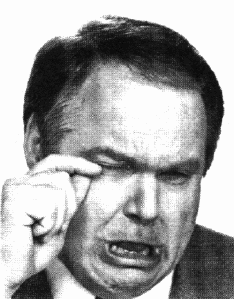
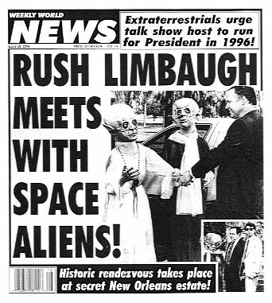
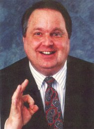

rotten > Library > Biographies > Entertainers > Pundits > Rush Limbaugh
Rush Limbaugh
 "I
don't consider myself an offensive guy. I'm just a harmless, lovable little
fuzzball." "I
don't consider myself an offensive guy. I'm just a harmless, lovable little
fuzzball."
Rush "Rusty" Hudson Limbaugh III has enjoyed remarkable success
as the Republican version of Howard Stern for nearly twenty years. His vaudevillian
radio comedy stylings, combined with an ever present ability to enrage liberal
Democrats with simple turns of phrase are worthy of anyone's attention during
long, slow drives through evening traffic.
His love for tickling and toying with listeners is matched only by his confidence.
Limbaugh weaves incendiary emotional tapestries of fact, fiction and half-truths
delivered with precision timing. He lambasted Bill Clinton with clockwork
regularity, and continues to tout Ronald Reagan as the greatest President
of all time. Limbaugh's observations are trimmed of unnecessary explanation,
and his skill at wordsmithery (i.e. coining the phrase feminazi) has
often been compared to that of rapper Eminem.
Facts dispensed by Limbaugh are almost never questioned during his program.
A hostile caller rarely gets through screeners, and his TV show was regularly
delivered before a live, cheering studio audience. Limbaugh doesn't debate -
he prefers to forge a media empire largely based on unchallenged monologues
or scripted chains of thought.
Limbaugh
was a chubby debating student in high school, and he didn't date much. Socializing
in groups wasn't something he was comfortable with outside the safety of a studio.
Over his course of his career, he'd get hired and fired from numerous radio
stations (KGMO, KQV, WXYZ, KUDL, KFIX, KMBZ), for his assertive, outspoken demeanor.
Many of his peers thought he was snobbish. On-air discussions grew heated, and
often he simply disconnected callers mid-sentence. He refused to stick to a
format. He made personal attacks, heavy on political commentary. Personality
clashes with management and station owners were commonplace - and like Howard
Stern, Limbaugh's satire wasn't immediately appreciated.
In 1984, Limbaugh replaced Morton Downey Jr. at KFBK in Sacramento, where he
had almost free reign of the airwaves from 9:00am until noon. He refused guests
on his show, firmly believing he should forge ahead only on his own merits and
the interaction between himself and callers. KFBK defended him to critics -
and Rush demonstrated his appreciation by accepting another contract from WABC,
and moving to New York. Within a month, his program was carried nationally by
55 radio stations.
His
first on-screen work came as a guest host on The Pat Sajak Show, in early
1990. Members of the audience grew extremely angry with Rush's snide commentary
- to the point where during a commercial break, the entire studio was cleared.
He performed the final segment alone and shaken.
For a long while, Rush Limbaugh and activist liberal Democrat Larry King
engaged in a battle. Both have mounted massive offensives against one another.
Although King regarded Limbaugh as a "right-wing kook," Rush was invited
on Larry King Live for an interview. When Rush showed up in his trademarked
suit and tie - he was miffed to learn that Wheel of Fortune host Pat
Sajak, not King, would be conducting the interview.
Rush later released this statement: "I want to salute the producers of
Survivor II and CBS. I want to salute them for their courage, boldness
and conviction. They have decided to go ahead and air their finale tonight,
despite the fact that I will be appearing live for the full hour on Larry King Live on CNN with guest host Pat Sajak."
His stance on the environment is legendary. In his best seller, The Way
Things Ought To Be, he informs readers that Mount Pintaubo in the Philippines
spewed forth more than a thousand times the amount of ozone-depleting chemicals
in one eruption than all the chlorofluorocarbons manufactured by all the wicked,
diabolical and insensitive industrial corporations in human history. His argument:
mankind can't possibly equal the output of even a single Pinatubo eruption -
much less 4 billion year's worth of them, so how can we destroy the ozone? Balderdash
and poppycock, he insists. The only people who worry about the environment
are wackos, dunderheaded alarmists and prophets of doom.
Less than a
month after the World Trade Center attacks in 2001, Rush delivered startling
news to his radio audience of millions:
"Ladies and gentlemen, I'm now totally deaf in my left ear. I cannot hear
a thing in my left ear, with hearing aids, the most powerful made, mean nothing.
I have the ability to recognize sound but not identify it in my right ear. I
cannot communicate with people. I can occasionally talk to people in person
one on one if their voice frequency happens to fit the range that I can still
hear, but I cannot hear radio, I cannot hear television, I cannot hear music.
I am, for all practical purposes, deaf, and it's happened in three months. I
have been to what I learned were the finest doctors and clinics throughout the
country, focusing on one, and every effort has been made to stabilize the loss,
with the hope of restoring it. No success has been reported, in either stabilizing
it or losing it - or restoring it."
"To describe for you the way I hear things now, I understand what I'm
saying, but I think it's more because I know what I'm going to say, rather than
I'm actually hearing it. I feel it, I feel the vocal vibrations in my skull,
but in terms of actually hearing what I say, that -- I don't really -- I don't
know if I am or not. Other people, depending on their voice range, if they're
loud and speak slowly enough and are close enough to me, then I can hear them,
but this is relatively new. The past ten days it's been this case. Ten days
ago, two weeks ago I was able to conduct a normal conversation, just a couple
of times, "Say that again, please?" But now it's deteriorated to the
point that, for all clinical, practical purposes, if I take the right-side hearing
aid out, I do not hear a single thing -- zip, zero, nada. I don't hear smoke
alarms."
Since that time, Rush Limbaugh has re-learned how to hear again. He married
Marta Fitzgerald, a woman he met on the Internet.
The Quotable Limbaugh...
On homosexuality: "When a gay person turns his back on you, it's
anything but an insult - it's an invitation. The difference between Los Angeles
and yogurt is that yogurt comes with less fruit."
On the homeless: "One of the things I want to do before I die is
conduct the Homeless Olympics. The 10-meter Shopping Cart Relay, the Dumpster
Dig, and the Hop, Skip and Trip."
On NAFTA: "If we are going to start rewarding no skills and stupid
people--I'm serious, let the unskilled jobs, let the kinds of jobs that take
absolutely no knowledge whatsoever to do--let stupid and unskilled Mexicans
do that work."
On
Native Americans: "There are more American Indians alive today than
there were when Columbus arrived or at any other time in history. Does this
sound like a record of Genocide?"
On feminism: "Feminism was established to allow unattractive women
easier access to the mainstream. Women were doing quite well in this country
before feminism came along."
On feminazis: "Militant feminists are pro-choice because it's their
ultimate avenue of power over men... It is their attempt to impose their will
on the rest of society, particularly on men."
On corporate layoffs: "Why is it that whenever a corporation fires
workers, it's never speculated that the workers might have deserved it?"
On Kurt Cobain: "Kurt Cobain was, ladies and gentleman, was a worthless
shred of human debris."
Speculating as to how a Mexican won the New York marathon: "An
immigration agent chased him for the last 10 miles."
timeline
| 12 Jan 1951 |
Rush Limbaugh born, Cape Girardeau. Weight: MO, 7 pounds 6 ounces. |
| 5 Jun 1969 |
Graduates Cape Central High School, Cape Girardeau, MO. |
| 24 Nov 1970 |
Receives a military classification of 1-Y (fit for service only in time of war), thus avoiding the draft. There is some dispute on the reason for this, but Franken cites Limbaugh's brother recounting an unusual medical condition: "Limbaugh avoided the draft because of a pilonidal cyst at the base of the spinal cord in which excess tissue and hair may collect, causing discomfort and discharge. As disgusting as this sounds, there is no evidence that Limbaugh's cyst contributed to the breakup of his two marriages." But this conflicts with a transcript of Limbaugh's radio program:
| CALLER: |
And Rush, you never mentioned how you dodged the Vietnam draft. |
| RUSH: |
I didn't. |
| CALLER: |
Yes, you did. You claimed you had a boil on your butt -- |
| RUSH: |
No. You see, that's part of popular mythology that is out there that I have not whined nor complained about, Greg. But that is just a bunch of Internet B.S. and hyperbole. Never happened. Was not the cause; wasn't the case. |
|
| 1971 |
Moves to Pittsburgh to work for KQV, then is fired. |
| 24 Sep 1977 |
Marries Roxy Maxine McNeely, sales secretary at radio station WHB in Kansas City, at the Centenary United Methodist Church in Cape Girardeau. The marriage lasts about eighteen months. |
| Mar 1980 |
Roxy McNeely files for divorce, citing "incompatibility". |
| 10 Jul 1980 |
Divorces Roxy McNeely. |
| 1983 |
Marries Michelle Sixta, a Kansas City Royals stadium usherette, at the Stadium Club. |
| Dec 1988 |
Second wife leaves him, Christmas weekend. |
| 4 Jul 1989 |
Limbaugh's program begins broadcast from New York City. |
| 14 Sep 1992 |
Debut of television talk show, 192 stations. |
| Oct 1992 |
Weight: 310 pounds (Orange County Register) or 260 pounds (People). |
| 23 Sep 1993 |
"He says that, 'I know every expert in the world will disagree with me, but I don't buy into the disease part of drug abuse. The first time you reach for a substance you are making a choice. Every time you go back, you're making a personal choice. I feel very strongly about that.' What he's saying is, that if there's a line of cocaine here, I have to make the choice to go down and sniff it. And I don't know how -- how to do it, but if I was going to do it, I'd do it. If there were a gun here, it wouldn't fire itself. I've got to reach for it and -- and pull the trigger. And his point is, that we are rationalizing all this irresponsibility and all the choices people are making and we're blaming not them, but society for it. All these Hollywood celebrities say the reason they're weird and bizarre is because they were abused by their parents. So we're going to pay for that kind of rehab, too, and we shouldn't. It's not our responsibility." |
| 9 Dec 1993 |
"If [Surgeon General Jocelyn Elders] wants to legalize drugs, send the people who want to do drugs to London and Zurich, and let's be rid of them." Rush Limbaugh, admitted drug addict, inexplicably still lives in America. |
| 16 Jan 1994 |
The Chicago Sun-Times quotes Rush as telling his listeners: "You know the Clintons send Chelsea to the Sidwell Friends private school... A recent eighth grade class assignment required students to write a paper on 'Why I Feel Guilty Being White.' ... My source for this story is CBS News. I am not making it up." CBS News denies ever reporting such a story. It also turns out that the Sidwell School (28% of whose student body is composed of minorities) never assigned any such essay, not even (as Rush later alleged) "Should White People Feel Guilty and Why?" |
| 19 Jan 1994 |
Rush tells his television audience: "This
(Iran-Contra special prosecutor Lawrence) Walsh story basically is: we just spent seven years and $40 million looking for any criminal activity on the part of anybody in the Reagan administration, and guess what? We couldn't find any. These guys didn't do anything, but we wish they had so that we could nail them. So instead, we're just going to say, 'Gosh, these are rotten guys.' They have absolutely no evidence. There is not one indictment. There is not one charge." |
| 23 Feb 1994 |
"I think this reason why girls don't do well on multiple choice tests goes all the way back to the Bible, all the way back to Genesis, Adam and Eve. God said 'All right, Eve, multiple choice or multiple orgasms, what's it going to be?' We all know what was chosen." (TV show.) |
| 10 Mar 1994 |
Upon receiving an article clipped from a newsletter from Johnson Smick International, Rush Limbaugh deems it worthy to share the unsubstantiated claim with his radio listeners: "OK, folks, I think I got enough information here to tell you about the contents of this fax that I got. Brace yourselves. This fax contains information that I have just been told will appear in a newsletter to Morgan Stanley sales personnel this afternoon... What it is is a bit of news which says... there's a Washington consulting firm that has scheduled the release of a report that will appear, it will be published, that claims that Vince Foster was murdered in an apartment owned by Hillary Clinton, and the body was then taken to Fort Marcy Park." No such report is ever actually issued. |
| 29 Apr 1994 |
Rush tells his listeners: "It has not been proven that nicotine is addictive, the same with cigarettes causing emphysema." |
| 13 May 1994 |
Rush tells his television audience: "Now I got something for you that's true. 1972, Tufts University, Boston. This is 24 years ago -- or, 22 years ago. Three-year study of 5,000 coeds, and they used a benchmark of a bra size of 34C. They found that the -- now wait, it's true -- the larger the brasize, the smaller the I.Q." No such study was ever actually issued. |
| 18 May 1994 |
Rush asks his listeners: "Do you know we have more acreage of forest land in the United States today than we did at the time the constitution was written?" Then: 850 million acres. Now: 730 million. |
| 27 May 1994 |
Marries third wife Marta Fitzgerald, a 35-year-old aerobics instructor he met on Compuserve. The two are married in Justice Clarence Thomas' house, with the ceremony officiated by Thomas himself. Also in attendence were William Bennett, James Carville and Mary Matalin. |
| 16 Dec 1994 |
On his daily radio show, conservative pundit Rush Limbaugh declares: "We have alcoholics and drug addicts in our society,
don't we? And what do we say about them? 'Well, they can't help it. Why, it's genetic. Why, they have a disease. Why, put one thimbleful of scotch in front of them and they can die.' We totally exempt them from any control over their lives, do we not? Some athlete will spend two years snorting lines of coke. 'He can't help it. You know, it's -- it's just -- it's not -- it's -- it's genetic. These people -- they're predisposed to having this addictive syndrome. They -- they can't help.' Yeah, like that line of cocaine just happened to march into the hotel, go up to the athlete's room and put itself right there in front of him on his blotter." |
| 5 Oct 1995 |
"What this says to me is that too many whites are getting away with drug use. Too many whites are getting away with drug sales. Too many whites are getting away with trafficking in this stuff. The answer to this disparity is not to start letting people out of jail because we're not putting others in jail who are breaking the law. The answer is to go out and find the ones who are getting away with it, convict them and send them up the river, too." |
| May 1996 |
"I've warned to skip some topics like: Newt Gingrich's first wife. Bob Dole's first wife. Phil Gramm's first wife. Dick Armey's first wife. Rush Limbaugh's first wife. Rush Limbaugh's second wife. Rush Limbaugh's third wife." Al Franken, White House Correspondents Association Dinner. |
| Jan 1999 |
Al Franken publishes his book, Rush Limbaugh is a Big Fat Idiot. |
| 1999 |
Limbaugh enters detox. Wilma Cline |
| 20 Nov 1999 |
Appears on CNBC's Tim Russert show describing his weight loss: "I got to 325 at my highest. And--and I've--I--I lost the weight in two stages, and I'm now at 215. So that's--yeah, 110 pounds." His secret? Pasta. Lots of pasta. |
| 8 Oct 2001 |
Announces to his radio audience that he is "for all practical purposes, deaf". |
| Jun 2002 |
Limbaugh enters detox a second time. Wilma Cline |
| 7 Mar 2003 |
Limbaugh repeats as fact the unfounded and quite ludicrous claim that German Foreign Minister Joshka Fischer was a member of the Bader-Meinhof gang, also known as the Red Army Faction. rushlimbaugh.com |
| 1 Oct 2003 |
Limbaugh resigns from ESPN over racial remarks he made on the network. |
| 2 Oct 2003 |
Reports surface that Limbaugh is being investigated by the Florida State Attorney General's office in Palm Beach County, for his abuse of Oxycontin, Lorcet and hydrocodone prescription painkillers. The source for the story is Wilma Cline, a former housekeeper and also alleged source of the drugs. She claims to have obtained Limbaugh 4,350 pills over a 47 day period. An unnamed source at the State Attorney's office confirmed the story to the New York Daily News. |
| 10 Oct 2003 |
To radio audience: "I am addicted to pain medication." |
| 17 Nov 2003 |
Rush Limbaugh returns to the air after a well-publicized monthlong rehab. |
| 18 Nov 2003 |
Authorities tell ABC News they are investigating Limbaugh for money laundering violations, involving "30 to 40" just-under-$10,000 withdrawals from US Trust bank, structured to avoid Federal currency reporting requirements. |
| 6 May 2004 |
Radio commentator Rush Limbaugh dismisses the photos taken of naked prisoners at Abu Ghraib prison, saying: "This is no different than what happens at the Skull and Bones initiation." |
| 31 May 2004 |
In an interview with Time magazine, Rush Limbaugh declares himself a longtime fan of the ACLU after they filed an amicus brief on his behalf in his prescription drug case: "In a situation like this, I think it's safe to say I welcome its support, and I don't find it hypocritical at all, because I am not anti-ACLU. If the ACLU wants to go after, say, nativity scenes or this sort of thing, I may take issue, but there are other areas where I've supported things it has done." |
| 23 Oct 2006 |
On his radio show, Rush Limbaugh decries a Democratic political ad featuring a Parkinson's-stricken Michael J. Fox: "He is moving all around, and shaking, and it's purely an act. This is the only time I have ever seen Michael J. Fox portray any of the symptoms of the disease he has. [...] This is really shameless, folks. This is really shameless of Michael J. Fox. Either he didn't take his medication, or he's acting. One of the two." |
Pornopolis |
Rotten |
Faces of Death |
Famous Nudes
|